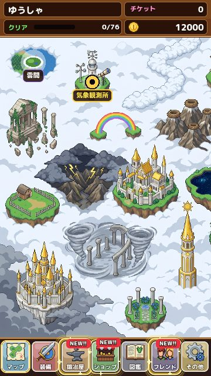
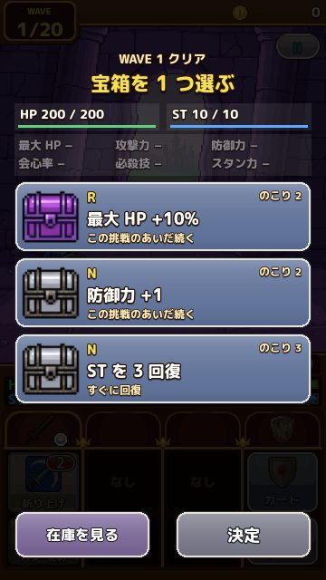

蜃気楼のダンジョン：WAVE を勝ち抜くやりこみ
各世界の最後に現れる蜃気楼のダンジョンの決まり、WAVE の合間の宝箱、中断とコンティニュー、記録とランキング、クリアのごほうびをまとめました。 更新：2026-11-23
蜃気楼のダンジョンとは
蜃気楼のダンジョンは、それぞれの世界の冒険を終えた人のための、いちばん手ごわいやりこみの場所です。世界ごとに 1 つずつあり、その世界の最後のボスを倒すと、その世界の地図のあいている場所にアイコンが現れます。
| 世界 | ダンジョン | WAVE の数 | 持って行ける装備 |
|---|---|---|---|
| 地上 | 蜃気楼の斜塔 | 20 | SR+ まで |
| 地底 | 蜃気楼の洞窟 | 17 | UR まで |
| 海底 | 蜃気楼の沈没船 | 17 | LR まで |
| 天空 | 蜃気楼の暗雲 | 17 | MR まで |
中にある STAGE は 1 つだけで、その世界で戦ってきたボスたちと、1 WAVE に 1 体ずつ、お供なしで続けて戦います。すべての WAVE のボスを倒すとクリアです。出てくるボスの動きや技は元の場所のままですが、HP と攻撃力は蜃気楼用に大きく上がっていて、WAVE が進むほど強くなります。最後までたどり着ける人はほんのひとにぎり、というつもりで作られた場所なので、まずは「前の自分より 1 WAVE でも先へ」を目標にしてください。

地図にいつ出るかは、ダンジョンの決まりの説明のいちばん最後に書かれています。2026 年 11 月の時点では、毎日地図に出ています。

挑戦の始め方
地図で蜃気楼のアイコンを選ぶと、ダンジョンの画面が開きます。ここには、そのダンジョンの「過去最高到達 WAVE」と「今週の最高到達 WAVE」、週のランキングが並んでいます。中断している挑戦があるときは「続きから」と「はじめから」を選べます。「続きから」なら中断した WAVE から、「はじめから」なら WAVE 1 からの新しい挑戦になります。
出発の前には、ふだんの STAGE と同じく出発の準備の画面で装備を確かめます。持って行ける上限をこえた装備があると「開始」が押せないので、上限までの装備でセットを 1 つ作っておくと、毎回の準備が楽になります。
蜃気楼の中だけの決まり
初めて入るときには決まりの説明が出て、2 回目からは STAGE の「詳細」で同じ説明を見られます。おもな決まりは次のとおりです。
- 難易度はルナティック：ふだんの難易度に関係なく、蜃気楼の中だけはいちばん難しいルナティックになります。外に出ると元の難易度にもどります（難易度 5 段階のちがい）
- ガードはその世界の守り方：地上はタップ、地底は向きのフリック、海底は押して離すホールド、天空は左で受けて払うスワイプのガードです
- 装備のレア度に上限がある：上の表のレア度までの武器・盾しか持って行けません。あとの世界の武器でも、レア度が上限までなら持って行けます。借りる武器も同じです
- ガードしてもダメージを受ける：ふつうのガードやジャストガードでも削られます。ダメージを 0 にできるのはミラクルガードだけです
- 1 発のダメージには上限がある：どんなに強い攻撃でも、1 発で受けるのは最大 HP の 80% までです。HP が満タンなら、1 発で倒れることはありません
- HP の回復はミラクルガードと宝箱だけ：ミラクルガードで回復するのは最大 HP の 20% です。ほかに HP が回復するのは、WAVE の合間の宝箱だけです
ふだんの難易度がルナティックでないときは、入る前に「難易度が変わる」ことを知らせる窓が出ます。蜃気楼から出たあとは、いつもの STAGE は元の難易度のまま遊べるので、難易度を自分で変え直す必要はありません。

つまり蜃気楼では、ミラクルガードが「守り」と「回復」の両方を担います。ふだん以上にガードのタイミングが大切になるので、挑む前に ガードの極意 を読み直しておくのもおすすめです。
WAVE の合間の宝箱
WAVE のボスを倒すと、次の WAVE の前に宝箱が並び、その中から 1 つを選べます。宝箱の数は 3 つのことが多く（60%）、4 つ（30%）や 5 つ（10%）のこともあります。宝箱には N・R・SR の 3 つの段があり、WAVE が進むほど良い段の宝箱が出やすくなります。中身は次の 8 種類です。
| 宝箱 | N | R | SR |
|---|---|---|---|
| ST 回復 | ST を 3 回復 | 5 回復 | 7 回復 |
| HP 回復 | HP を 15% 回復 | 30% | 50% |
| 最大 HP | +5% | +10% | +15% |
| 攻撃力 | +5% | +10% | +15% |
| 防御力 | +1 | +2 | +3 |
| 会心率 | +3% | +5% | +8% |
| 必殺技の威力 | +10% | +20% | +30% |
| スタン力 | +10% | +20% | +30% |
ST 回復と HP 回復はその場で効き、ほかの 6 種類はその挑戦が終わるまでずっと続きます。防御力の +1 は盾の DEF が 1 増えるのと同じで、ふつうのガードで減るダメージが 5% 増えます。
宝箱には在庫があり、1 回の挑戦の中で、それぞれの種類と段の宝箱が出る数は決まっています。たとえば SR の段の宝箱は、HP 回復が 2 回、そのほかは 1 回ずつしか出ません。一度に並ぶ宝箱は、同じ種類が 2 つ重ならないようになっています。WAVE の合間の画面から、残りの在庫を別の画面で見られるので、「今ここで取るか、あとの良い段を待つか」を考える材料にしてください。
中断・再開とコンティニュー
蜃気楼の挑戦は、とても長い時間がかかります。そのため、WAVE の始めから毎ターン自動で保存され、戦いのメニューからやめても、入り直すと「続きから」で中断したところから再開できます。ただし、続きはその週の間だけです。週が変わると中断していた挑戦は消え、そこまでの WAVE がその週の記録として残ります。
HP がなくなって倒れても、無料でコンティニューできます。コンティニューすると HP と ST が全回復して、そのまま挑戦を続けられます。ただし、記録に残る到達 WAVE は、初めてコンティニューした WAVE までです。ランキングを目指すなら、コンティニューなしでどこまで行けるかが勝負になります。コンティニューは「記録とは別に、先の WAVE のボスを見てみたい」「蜃気楼カードを集めたい」ときに使うとよいでしょう。

記録とランキング
蜃気楼のダンジョンごとに、2 つの記録がつきます。
- 過去最高到達 WAVE：これまでの挑戦でいちばん先まで進んだ WAVE
- 今週の最高到達 WAVE：その週の挑戦での最高記録。週は月曜日の 0 時（日本時間）に新しくなります
同じ WAVE に届いた記録どうしは、使ったターン数が少ないほうが上です。ターン数は、その WAVE に着くまでに使ったターンで数えます（負けた WAVE の中で使ったターンは数えません）。
ダンジョンの画面では、週のランキングの上位 20 人を見られます。札は「フレンドと自分」と「全プレイヤー」の 2 つで、はじめはフレンドと自分のランキングが開きます。ランキングには名前・到達 WAVE・ターン数と、その記録で使っていた装備の絵が並ぶので、上の人がどんな武器と盾で挑んでいるのかを参考にできます。先週のランキングに切りかえて見ることもできます。自分の記録はプロフィールに、フレンドの記録はフレンドの画面にも出ます（フレンドの記録は、自分が開けた蜃気楼のものだけが見えます）。
クリアのごほうびと蜃気楼カード
| ダンジョン | クリアするたびに | 初めてのクリアで |
|---|---|---|
| 蜃気楼の斜塔 | 500,000 コイン | ミラクルベル ×3 |
| 蜃気楼の洞窟 | 1,000,000 コイン | 星核のかけら ×3 |
| 蜃気楼の沈没船 | 1,250,000 コイン | 海神鋼 ×3 |
| 蜃気楼の暗雲 | 1,500,000 コイン | オリハルコン ×3 |
クリアできなくても、挑戦のたびにもらえるものがあります。それが「蜃気楼カード」です。挑戦の中で倒したボスのうち、まだ持っていないボスの蜃気楼カードが、挑戦の終わりにまとめて図鑑に入ります。負けてしまっても、倒した分のカードはもらえます。図鑑でそのボスの大きなカードを開き、「蜃気楼」のボタンを押すと、ふだんとはちがう蜃気楼の衣装の姿に切りかわります（図鑑の楽しみ方）。
挑み方のコツ
- 上限いっぱいまで育てた装備で：持って行けるのは上限のレア度までなので、そのレア度の武器と盾をしっかり強化しておくことが、そのまま強さになります。盾の強化は最大 HP を増やすので、1 発 80% の上限とあわせて生き残りやすくなります
- 「おすすめ」も使う：出発の準備の「おすすめ」は、蜃気楼でも上限までの品の中からボスに合わせて選んでくれます（装備セットとおすすめ装備）。いい組み合わせができたら装備セットに登録しておきましょう
- 宝箱は「ずっと続く強化」を早めに：攻撃力・最大 HP・会心率などは、早く取るほど多くの WAVE で効きます。HP 回復は、HP が減っているときのために残しておくと無駄がありません
- ミラクルガードを数える：回復はミラクルガードがたより。ジャストで満足せず、ミラクルを狙えるボスの攻撃を覚えていくと、届く WAVE が伸びていきます
- 週の初めに挑む：中断した挑戦は週が変わると消えます。月曜日から始めれば、1 週間かけてじっくり進められます